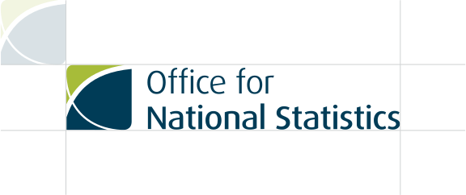
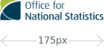

Clear space
To ensure maximum clarity of the ONS logo it is essential to avoid crowding it with other visual elements. For this reason an clear space has been created to help protect the logo. No type or graphic element should intrude into this established space.
For maximum impact, the clear space is a distance equivalent to the width of the ONS Symbol around the identity. Try to maximize this space whenever possible.
Leave 15% whitespace between the ONS symbol and other elements.
Minimum sizes
To ensure consistent legibility and clarity of the logo, adhere to the minimum size recommendations.
The minimun size of the primary logo on screen is 175px wide, 40mm in print.
The minimun size of the landscape logo on screen is 225px wide. This version of the ONS logo should not be used in print.